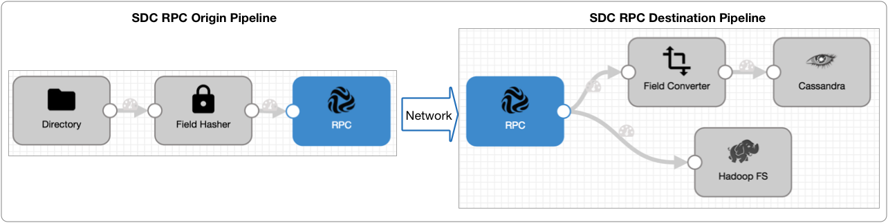
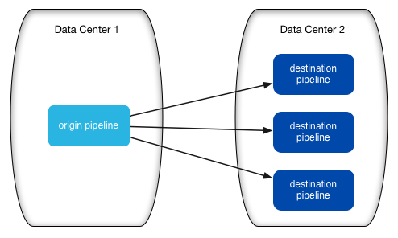

SDC RPC Pipelines
SDC RPC Pipeline Overview
Data Collector Remote Protocol Call pipelines, a.k.a. SDC RPC pipelines, are a set of StreamSets pipelines that pass data from one pipeline to another without writing to an intermediary system.
SDC RPC pipelines can write to each other on the same machine or over a local network or the public internet. You might use SDC RPC pipelines to send data securely between two data centers.
Typically, a pipeline uses a standard origin such as Directory and writes to a standard destination such as HBase. An SDC RPC pipeline includes an SDC RPC destination or an SDC RPC origin to communicate with another SDC RPC pipeline.
To use SDC RPC pipelines, you create an origin pipeline and a destination pipeline. The origin pipeline uses an SDC RPC destination to write directly to an SDC RPC origin in the destination pipeline, as follows:
The SDC RPC destination and SDC RPC origin enable you to pass data securely from one pipeline to another, effectively like creating a single pipeline that spans a network.
Pipeline Types
- origin pipeline
- Processes data from the origin system and passes it to the destination pipeline.
- Uses an SDC RPC destination to pass data to a destination pipeline. To provide redundancy and load-balancing, you can define connections to multiple destination pipelines.
- destination pipeline
- Processes data from the origin pipeline and passes it to the destination system.
- Uses an SDC RPC origin to process data from the origin pipeline.
Deployment Architecture
When using SDC RPC pipelines, consider your needs and environment carefully as you design the deployment architecture.
- Use multiple destination pipelines to improve downstream availability
- To ensure downstream availability, you generally want to deploy multiple destination pipelines.
- Note that the origin pipeline writes data to a single destination pipeline, but can round-robin through multiple pipelines. By using multiple destination pipelines, you can provide redundancy and avoid bottlenecks with a high-volume origin pipeline:
- 
- If you have multiple pipelines with similar data, you might deploy several sets of this model to provide load-balancing and redundancy:

Configuring the Delivery Guarantee
The delivery guarantee determines when a pipeline commits the offset. When configuring the delivery guarantee for SDC RPC pipelines, use the same option in origin and destination pipelines.
- Use At Least Once in both pipelines to ensure the pipelines process all data.
- Use At Most Once in both pipelines to avoid the possible duplication of data.
Defining the RPC ID
The RPC ID is a user-defined identifier that allows an SDC RPC origin and SDC RPC destination to recognize each other.
To enable the SDC RPC destination to write directly to an SDC RPC origin, use the same RPC ID in both stages.
To write to multiple pipelines, use the RPC ID in the SDC RPC destination and all related SDC RPC origins.
Enabling Encryption
You can enable SDC RPC pipelines to transfer data securely using SSL/TLS. To use SSL/TLS, enable TLS in both the SDC RPC destination and the SDC RPC origin.
- A keystore file with the private keys of the TLS certificate, and the password for the file.
- For self-signed certificates, a truststore file with the public key of the TLS certificate of the SDC RPC origin, and the password for the file.
- Save the keystore and the truststore files in the Data
Collector
resources directory, $SDC_RESOURCES.
For more information about environment variables, see Data Collector Environment Configuration.
- In the SDC RPC destination, enter the truststore file name and password when using a self-signed certificate.
- In the SDC RPC origin, enter the keystore file name and password.
Configuration Guidelines for SDC RPC Pipelines
To create a valid set of SDC RPC pipelines, some configuration options must be aligned. Use the following guidelines to configure SDC RPC pipelines:
- origin pipeline
- In the origin pipeline, configure the following elements:
- In the pipeline properties, set the Delivery Guarantee to the option you want to use.
- In the pipeline, use the SDC RPC destination.
- When you configure the SDC RPC destination, enter the RPC ID and RPC connection
information.
To use multiple destination pipelines, enter the RPC connection information for each SDC RPC origin that you want to use.
- To use encryption to transfer data between the pipelines, enable TLS and configure related properties.
- destination pipeline
- For each destination pipeline, configure the following elements:
- In the pipeline properties, set the Delivery Guarantee to the same option as the origin pipeline. Using a different option causes the Data Collector to default to At Most Once behavior.
- In the pipeline, use the SDC RPC origin.
- When you configure the SDC RPC origin, define the properties as follows:
- Use the same RPC ID used in the SDC RPC destination.
- For the RPC Listening Port, enter the appropriate port number.
It should be a port number specified in one of the RPC connections in the SDC RPC destination.
- To use encryption to transfer data between the pipelines, enable TLS and configure related properties.